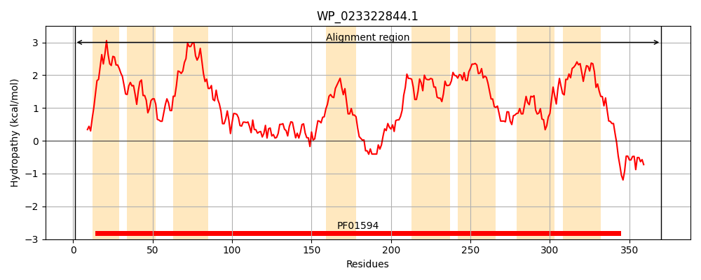
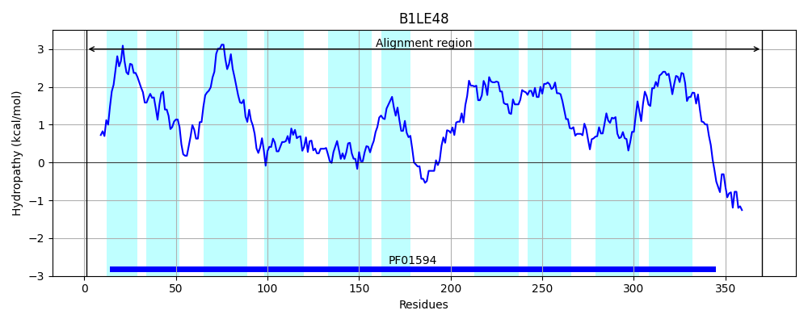

Hit Accession: B1LE48
Hit TCID: 2.A.86.2.1
Hit Description: gnl|BL_ORD_ID|1623 gnl|TC-DB|B1LE48|2.A.86.2.1 Inner membrane protein YdiK OS=Escherichia coli (strain SMS-3-5 / SECEC) GN=ydiK PE=4 SV=1
Mach Len: 370
e:0.000000
Query TMS Count : 8
Hit TMS Count: 10
TMS-Overlap Score: 8.750000
Predicted Substrates:None
BLAST Alignment:
Score: 1551 , Bit scores: 602 bits, E-value: 0.0e+00, Alignment length: 370, Percentage identity: 79
Query: 1 MINPHQPRDIPQILLSVLFLALIIISCLWVVQPFILSFAWAGTVVIATWPVLLRLQRVLFGKRLLAVLAMTLLLFLLFVIPIALLVNSLVDNSVPLIKLISSGNVTLPDFAWLNSVPLVGDKLYSAWHGLLDMGGSAIMAKVRPYIGTTTSWFVGQAAHIGKLLVYCGLMLLFSALLYWRGEQVAYGFRYFATRLAAKRGDAAVLLAGQAVRAVALGVVVTALTQAVLGGIGLAISGVPYAALLTVVMIFTCLVQLGPLLVLVPSIIWLYWSGDTTWGTVLLVWSCVVGTMDNVIRPVLIRMGADLPMILILTGVIGGLIAFGMIGLFIGPVLLAVSWRLYDAWVHEVPPPPKDPDVVLEELSELEAGRK 370
M+N QPRD+ QILLSVLFLA++I++CLW+VQPFIL FAWAGTVVIATWPVLLRLQ+ +FG+R LAVL MTLLL ++F+IPIALLVNS+VD S PLIK ISSG++TLPD AWLN++P++G KLY+ WH LLDMGG+AIMAKVRPYIGTTT+WFVGQAAHIG+ +V+C LMLLFSALLYWRGEQVA G R+FATRLA RGDAAVLLA QA+RAVALGVVVTAL QAVLGGIGLA+SGVPYA LLTV+MI +CLVQLGPL VL+P+IIWLYW+GDTTWGTVLLVWS VVGT+DNVIRP+LIRMGADLP+ILIL+GVIGGLIAFGMIGLFIGPVLLAVSWRL+ AWV EVPPP P+ +LEEL E+E K
Sbjct: 1 MVNVRQPRDVAQILLSVLFLAIMIVACLWIVQPFILGFAWAGTVVIATWPVLLRLQKFMFGRRSLAVLVMTLLLVMVFIIPIALLVNSIVDGSGPLIKAISSGDMTLPDLAWLNTIPVIGAKLYAGWHNLLDMGGTAIMAKVRPYIGTTTTWFVGQAAHIGRFMVHCALMLLFSALLYWRGEQVAQGIRHFATRLAGVRGDAAVLLAAQAIRAVALGVVVTALVQAVLGGIGLAVSGVPYATLLTVLMILSCLVQLGPLPVLIPAIIWLYWTGDTTWGTVLLVWSGVVGTLDNVIRPMLIRMGADLPLILILSGVIGGLIAFGMIGLFIGPVLLAVSWRLFAAWVEEVPPPTDQPEEILEELGEIEKSNK 370 | Protein Hydropathy Plots: |
|---|
|  |  |
Pairwise Alignment-Hydropathy Plot:
|
|---|
 |